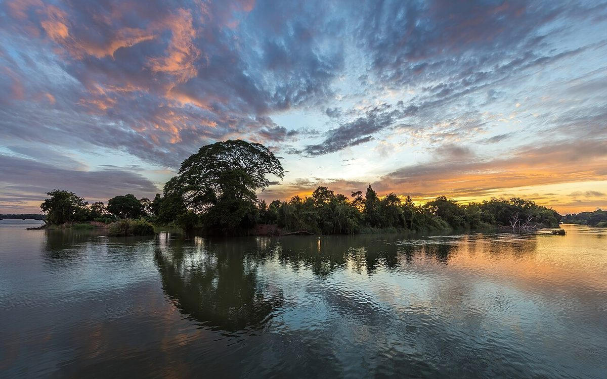

悠々
閑々

制作側の連想
雲見帖(くもみちょう)
屋号の「悠々閑々」は、ゆったり、のんびりした様子を表す言葉だそうです。制作側はそこから「空をゆっくり流れていく雲」を連想し、サイト全体を雲を見て書きとめる帳面のように作りました。お店の理念や名前の由来とは無関係の、制作側の連想です。
雲の覚え書き(イメージ)
のんびり眺める、三つの空。
写真は四万十市の空ではありません。国外または撮影地不明のフリー素材です。

No.1巻雲空の高いところで、筆ではいたように薄く伸びる雲。

No.2高積雲ひつじの群れのような、小さなかたまりの雲。

No.3層積雲低めの空に、帯のように並んでゆっくり動く雲。
悠々
ゆったりと、せかせかしない様子。
閑々
静かで、のんびりした様子。
ことばの意味は一般的な説明で、お店の考えを示すものではありません。
ご案内
お店のこと(確認できたものだけ)
| 所在地 | 〒787-0668 高知県四万十市荒川1290-1 |
|---|---|
| 電話 | なし |
| 営業時間 | 準備中 |
| 定休日 | 準備中 |
| ご予約 | 準備中 |
| 駐車場 | 準備中 |
| SNS | Instagram @yu_yu_kan_kan |